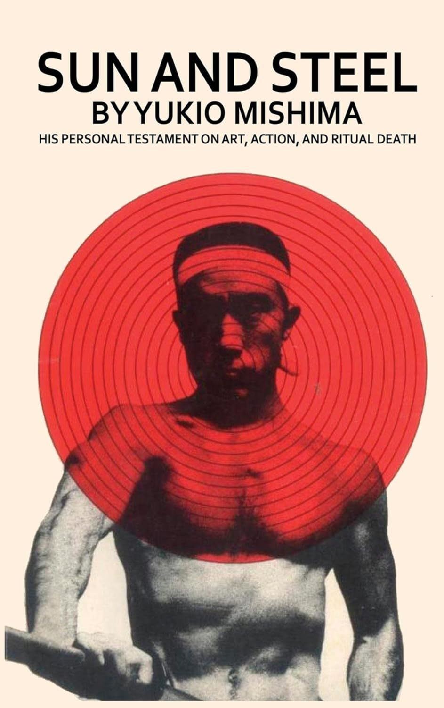

У овом фасцинантном делу, један од најпознатијих - и контроверзних - јапанских писаца створио је оно што би се могло назвати новом књижевном формом.
Она је нова јер комбинује елементе многих постојећих врста писања, али се на крају не уклапа ни у једну од њих.
На једном нивоу, може се читати као приказ како је слаби, књишки дечак открио важност сопственог физичког бића; „сунце и челик“ из наслова сами по себи
представљају симболе култа боравка на отвореном и тегова који се користе у бодибилдингу. На другом нивоу, то је расправа једног великог романописца о односу
између деловања и уметности, и његове сопствене, изузетно дотеране уметности посебно. Личније гледано, то је приказ потраге једног појединца за идентитетом и
самосталним унутрашњим јединством. Или се, опет, ово дело може посматрати као демонстрација како се интензивно лична преокупација може развити у дубоку животну
филозофију.
Сви ови елементи испреплетени су Мишиминим сложеним, али дотераним и гипким стилом. Исповест и самопосматрање, филозофија и поезија на крају се спајају у нешто
што је само по себи савршено и самодовољно. То је књижевно дело које је једнако пажљиво обликовано као и Мишимини романи, а истовремено представља неопходан кључ
за разумевање тих романа као уметности.
Пут који је Мишима изабрао ка „спасењу“ веома је личан. Ипак, овде се на крају назире недвосмислен тон сопства које превазилази појединачно и досеже поетску
визију универзалног. Књига је зато потресан документ и веома значајан показатељ будућег развоја једног од најзанимљивијих романописаца модерног доба.